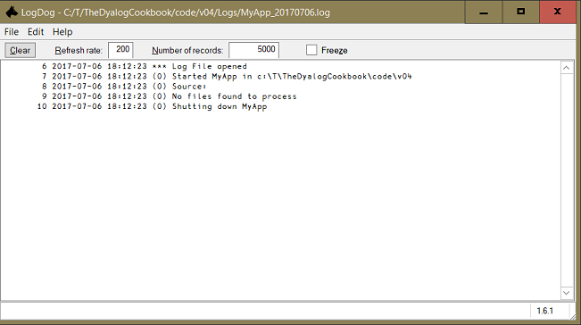

MyApp 1.0 is now working, but handles errors poorly. See what happens when we try to work on a non-existent file/folder:
Z:\code\v03\MyApp.exe Z:\texts\Does_not_existWe see an alert message: This Dyalog APL runtime application has attempted to use the APL session and will therefore be closed.
MyApp failed because there is no file or folder Z:\texts\Does_not_exist. That triggered an error in the APL code. The interpreter tried to display an error message and looked for input from a developer from the session. But a runtime task has no session, so at that point the interpreter popped the alert message and MyApp died.
CONTINUE workspaces
Prior to version 16.0, as soon as you close the message box a CONTINUE workspace was created in the current directory. Such a CONTINUE WS can be loaded and investigated, making it easy to figure out what the problem is. (However, this is true only if it is a single-threaded application, since workspaces cannot be saved when more than one thread is running.)
With version 16.0 you can still force the interpreter to drop a CONTINUE workspace by enabling the old behaviour with 2704⌶ 1, while 2704⌶ 0 would disable it again.
For analysis, load a CONTINUE workspace in an already running Dyalog session – don’t double-click a CONTINUE! The reason is that ⎕DM and ⎕DMX are overwritten in the process of booting SALT, meaning that you lose the error message.
You might recreate them by re-executing the failing line – but that has other dangers, or might fail in a new way.
Note also that the CONTINUE is always saved in the current directory; in version 16.0 there is no way to tell the interpreter to save the CONTINUE workspace elsewhere.
That is limiting, as it will fail for your own stand-alone EXEs if they are installed in the standard folders for executables under Windows, C:\Program Files (64-bit programs) and C:\Program Files (x86) (32-bit programs): even as an admin you cannot write to those folders or subfolders.
But Windows saves it anyway! If a program attempts to write to a banned location Windows tells them “Sure, no problem” but saves them in a e.g. "C:\Users\kai\AppData\Local\VirtualStore\Program Files\Dyalog\Dyalog APL-64 16.0 Unicode\CONTINUE.dws" where you are running Dyalog APL 64-bit Unicode version 16.0.
The next version of MyApp will improve by logging what happens when it runs.
Save a copy of Z:\code\v03 as Z:\code\v04 or copy v04 from the Cookbook website.
We’ll use the APLTree Logger class, which we’ll now install in the workspace root. If you’ve not already done so, copy the APLTree library folder into Z:\code\apltree.[1] Now edit Z:\code\v04\MyApp.dyapp to include some library code:
Target #
Load ..\AplTree\APLTreeUtils
Load ..\AplTree\FilesAndDirs
Load ..\AplTree\OS
Load ..\AplTree\Logger
Load Constants
Load Utilities
Load MyApp
Run #.MyApp.SetLX ⍬and run the DYAPP to recreate the MyApp workspace.
Help for the APLTree namespaces
You can get detailed documentation on an APLTree class or namespace by executing e.g.:
]ADoc APLTreeUtilsYou’ll find more about ADoc in the chapter Documentation – the Doc is in.
The Logger class and its dependencies will now be included when we build MyApp:
APLTreeUtilsis a namespace of functions needed by most applications. All members of the APLTree library depend on it.FilesAndDirsis a class that offers methods for handling files and directories.OScontains a couple of OS-independent methods for common tasks.KillProcessis just an example.FilesAndDirsneedsOSunder some circumstances.
Let’s get the program to log what it’s doing. Within MyApp, some changes. First we introduce aliases for the new modules:
⍝ === Aliases (referents must be defined previously)
F←##.FilesAndDirs ⋄ A←##.APLTreeUtils ⍝ from the APLTree libNote that APLTreeUtils comes with the functions Uppercase and Lowercase. We have those already in the Utilities namespace. This violates the DRY principle. We should get rid of one version and use the other everywhere. But how to choose?
First of all, almost all APLTree projects rely on APLTreeUtils. If you want to use this library then we cannot get rid of APLTreeUtils.
The two different versions both use the Dyalog ⌶ function, so functionality and speed are the same.
However, APLTreeUtils is in use for more than 10 years now, it comes with a comprehensive set of test cases and it is documented in detail. That makes the choice rather easy.
Therefore we remove the two functions from Utilities and change CountLetters:
CountLetters←{
{⍺(≢⍵)}⌸⎕A{⍵⌿⍨⍵∊⍺}Accents U.map A.Uppercase ⍵
}That works because the alias A we've just introduced points to APLTreeUtils.
Where is MyApp to write the logfile? We need a folder we know exists. That rules out fullfilepath. We need a logfile even if fullfilepath isn’t a valid path.
We'll write logfiles into a subfolder of the current directory, which we can be sure exists. Where will that be? When the EXE launches, the current directory is set:
Z:\code\v04\MyApp.exe Z:\texts\enCurrent directory is Z:\ and that’s where the logfiles will appear.
If this version of MyApp were for shipping that would be a problem. An application installed in C:\Program Files cannot rely on being able to write logfiles there. That is a problem to be solved by an installer. We’ll come to that later.
But for this version of MyApp the logfiles are for your eyes only. It’s fine to have the logfiles appear wherever you launch the EXE. You just have to know where they are. We will put them into a subfolder Logs within the current directory.
In developing and testing MyApp, we create the active workspace by running MyApp.dyapp. The interpreter sets the current directory of the active workspace as the DYAPP’s parent folder. That, too, is sure to exist.
#.FilesAndDirs.PWD
Z:\code\v04Now we set up the parameters needed to instantiate the Logger class. First we use the Logger class’ shared CreateParms method to get a parameter space with an initial set of default parameters. You can use the built-in method ∆List to display its properties and their defaults:
#.Logger.CreateParms.∆List''
active 1
autoReOpen 1
debug 0
encoding ANSI
errorPrefix *** ERROR
extension log
fileFlag 1
filename
filenamePostfix
filenamePrefix
filenameType DATE
path
printToSession 0
timestampWe shall modify them to match our needs and use the parameter namespace to create the Logger object.
For this we create a function OpenLogFile:
∇ instance←OpenLogFile path;logParms
⍝ Creates an instance of the "Logger" class.
⍝ Provides methods `Log` and `LogError`.
⍝ Make sure that `path` (that is where log files will end up) does exist.
⍝ Returns the instance.
logParms←##.Logger.CreateParms
logParms.path←path
logParms.encoding←'UTF8'
logParms.filenamePrefix←'MyApp'
'CREATE!'F.CheckPath path
instance←⎕NEW ##.Logger(,⊂logParms)
∇Notes:
- We need to ensure the current folder contains a subfolder
Logs. That’s what the methodFilesAndDirs.CheckPathdoes when the left argument is the string'Create!'. - We change the default encoding (ANSI) to UTF-8. Note that this has pros and cons: it allows us to write APL characters to the log file but it will also cause potential problems with any third-party tools dealing with log files, because many support only ANSI characters.
Although we’ve changed it here to get started, we recommend sticking with ANSI unless you have a very good reason not to. When we introduce proper error handling in chapter 6, we will do away with APL characters in the log file.
- We have not changed either
autoReOpen(1) orfilenameType('DATE'). They tell theLoggerclass to close a log file and re-open a new one each day at 23:59:59. It also defines (together withfilenamePrefix) the name of the log file. - If we ran
OpenLogFileand allowed it to return its result to the session window then something similar to this would appear:[Logger:Logs\MyApp_20170211.log(¯87200436)]- “Logger” is the name of the class the object was instantiated from.
- The path between
:and(tells us the actual name of the log file. Because thefilenameTypeis'DATE'the name carries the year, month and day the log file was opened.- The negative number is the tie number of the log file.
We create a function Initial (short for “Initialize”) which calls OpenLogFile and returns the Logger instance:
∇ {MyLogger}←Initial dummy
⍝ Prepares the application.
⍝At this point Initial does nothing; that will change soon.
We also need to change ProcessFile:
∇ data←(fns ProcessFiles)files;txt;file
⍝ was: (data enc nl)←(fns ProcessFiles)files;txt;file
⍝ Reads all files and executes `fns` on the contents.
data←⍬
:For file :In files
txt←'flat' A.ReadUtf8File file
⍝ was: (txt enc nl)←⎕NGET file
data,←⊂fns txt
:EndFor
∇We use APLTreeUtils.ReadUtf8File rather than ⎕NGET because it optionally returns a flat string without a performance penalty, although that is only an issue with really large files. This is achieved by passing 'flat' as the left argument to ReadUtf8File.
We ignore encoding and the newline character and allow it to default to the current operating system.
As a side effect ProcessFiles won’t crash anymore when files is empty because enc and nl have disappeared from the function.
Now we have to make sure that Initial is called from StartFromCmdLine:
∇ {r}←StartFromCmdLine arg;MyLogger
⍝ Needs command line parameters, runs the application.
r←⍬
MyLogger←Initial ⍬
MyLogger.Log'Started MyApp in ',F.PWD
MyLogger.Log #.GetCommandLine
r←TxtToCsv arg~''''
MyLogger.Log'Shutting down MyApp'
∇Note that we now log the full command line. In an application that receives its parameters from the command line this is important to do.
We take the opportunity to move code from TxtToCsv to a new function GetFiles. This new function will take the command-line argument and return a list of files which may contain zero, one or many filenames:
∇ (target files)←GetFiles fullfilepath;csv;target;path;stem
⍝ Investigates `fullfilepath` and returns a list with files
⍝ May return zero, one or many filenames.
fullfilepath~←'"'
csv←'.csv'
:If F.Exists fullfilepath
:Select C.NINFO.TYPE ⎕NINFO fullfilepath
:Case C.TYPES.DIRECTORY
target←F.NormalizePath fullfilepath,'\total',csv
files←⊃F.Dir fullfilepath,'\*.txt'
:Case C.TYPES.FILE
(path stem)←2↑⎕NPARTS fullfilepath
target←path,stem,csv
files←,⊂fullfilepath
:EndSelect
target←(~0∊⍴files)/target
:Else
files←target←''
:EndIf
∇We have to ensure GetFiles is called from TxtToCsv. Note that moving code from TxtToCsv to GetFiles allows us to keep TxtToCsv nice and tidy and the list of local variables short. In addition we have added calls to MyLogger.Log in appropriate places:
∇ rc←TxtToCsv fullfilepath;files;tbl;lines;target
⍝ Write a sibling CSV of the TXT located at fullfilepath,
⍝ containing a frequency count of the letters in the file text
(target files)←GetFiles fullfilepath
:If 0∊⍴files
MyLogger.Log'No files found to process'
rc←1
:Else
tbl←⊃⍪/(CountLetters ProcessFiles)files
lines←{⍺,',',⍕⍵}/{⍵[⍒⍵[;2];]}⊃{⍺(+/⍵)}⌸/↓[1]tbl
A.WriteUtf8File target lines
MyLogger.Log(⍕⍴files),' file',((1<⍴files)/'s'),' processed:'
MyLogger.Log' ',↑files
rc←0
:EndIf
∇Notes:
- We are now using
FilesAndDirs.Dirrather than the Dyalog primitive⎕NINFO.Apart from offering recursive searches (a feature we don’t need here) the
Dirfunction also normalizes the separator character. Under Windows it will always be a backslash while under Linux it is always a slash character.Although Windows itself is quite relaxed about the separator and accepts a slash as well as a backslash, as soon as you call something else in one way or another you will find that slashes are not accepted. For example: any setting of
⎕USING. - We use
APLTreeUtils.WriteUtf8Filerather than⎕NPUT:- It will either overwrite an existing file or create a new one, with no questions asked.
- It will try several times in case something goes wrong. This is often helpful when a slippery network is involved.
- We could have written
A.WriteUtf8File target ({⍺,',',⍕⍵}/⊃{⍺(+/⍵)}⌸/↓[1]tbl), avoiding the local variablelines. We didn’t, because this variable might be helpful if something should go wrong and we need to trace through theTxtToCsvfunction. - Note that
MyLoggeris a global variable rather than being passed as an argument toTxtToCsv. We will discuss this issue in detail in the Configuration settings chapter.
Finally we change Version:
∇r←Version
⍝ * 1.1.0:
⍝ * Can now deal with non-existent files.
⍝ * Logging implemented.
⍝ * 1.0.0
⍝ * Runs as a stand-alone EXE and takes parameters from the command line.
r←(⍕⎕THIS) '1.1.0' '2017-02-26'
∇The foreseeable error that aborted the runtime task – an invalid filepath – has now been replaced by a message saying no files were found.
We have also changed the explicit result. So far it has returned the number of bytes written. In case something goes wrong (file not found, etc.) it will now return ¯1.
We can now test TxtToCsv:
#.MyApp.TxtToCsv 'Z:\texts\en'
⊃(⎕NINFO⍠1) 'Logs\*.LOG'
MyApp_20160406.log
↑⎕NGET 'Logs\MyApp_20160406.log'
2016-04-06 13:42:43 *** Log File opened
2016-04-06 13:42:43 (0) Started MyApp in Z:\
2016-04-06 13:42:43 (0) Source: Z:\texts\en
2016-04-06 13:42:43 (0) Target: Z:\texts\en.csv
2016-04-06 13:42:43 (0) 244 bytes written to Z:\texts\en.csv
2016-04-06 13:42:43 (0) All done
Alternatively you could set the parameter printToSession – which defaults to 0 – to 1. That would let the Logger class write all the messages not only to the log file but also to the session. That can be quite useful for test cases or during development. (You can even stop the Logger class writing to the disk at all by setting fileFlag to 0.)
The Logger class is designed never to break your application – for obvious reasons. The drawback of this is that if something goes wrong, such as the path becoming invalid because the drive got removed, you would notice only by trying to examine the log files.
You can tell the Logger class that it should not trap all errors by setting the parameter debug to 1. Then Logger will crash if something goes wrong.
Let’s see if logging works also for the exported EXE. Run the DYAPP to rebuild the workspace. Export as before and then run the new MyApp.exe in a Windows console.
Z:\code\v04\MyApp.exe Z:\texts\enYes! The output TXT gets produced as before, and the work gets logged in Z:\Logs.
Let’s see what happens now when the filepath is invalid.
Z:\code\v04\MyApp.exe Z:\texts\deNo warning message – the program made an orderly finish. And the log?
↑⎕NGET 'Logs\MyApp_20160406.log'
2017-02-26 10:54:01 *** Log File opened
2017-02-26 10:54:01 (0) Started MyApp in Z:\code\v04
2017-02-26 10:54:01 (0) Source: G:\Does_not_exist
2017-02-26 10:54:01 (0) No files found to process
2017-02-26 10:54:26 *** Log File opened
2017-02-26 10:54:26 (0) Source: "Z:\texts\en\ageofinnocence.txt"
2017-02-26 10:54:26 (0) Started MyApp in Z:\code\v04
2017-02-26 10:54:26 (0) 1 file processed.
2017-02-26 10:58:07 (0) Z:/texts/en/ageofinnocence.txt
2017-02-26 10:54:35 *** Log File opened
2017-02-26 10:54:35 (0) Started MyApp in Z:\code\v04
2017-02-26 10:54:35 (0) Source: "Z:\texts\en\"
2017-02-26 10:54:35 (0) 9 files processed.
2017-02-26 10:58:07 (0) Z:/texts/en/ageofinnocence.txt
...In case you wonder what the (0) in the log file stands for: this reports the thread number that has written to the log file. Since we do not use threads, this is always (0) = the main thread the interpreter is running in.
One more improvement in MyApp: we change the setting of the system variables from
:Namespace MyApp
(⎕IO ⎕ML ⎕WX ⎕PP ⎕DIV)←1 1 3 15 1
....to the more readable:
:Namespace MyApp
⎕IO←1 ⋄ ⎕ML←1 ⋄ ⎕WX←3 ⋄ ⎕PP←15 ⋄ ⎕DIV←1
....So far we have used modules from the APLTree project: class and namespace scripts that might be useful when implementing an application.
APLTree also offers applications that support the programmer during her work without becoming part of the application. One of those applications is the LogDog.
Its purpose is simply to watch a log file and reflect any changes immediately in the GUI. This is useful for us, as the log file is now our best view of how the application is doing.
In order to use LogDog you first need to download it from http://download.aplwiki.com. Download it into the default download location. For a user JohnDoe that would be C:\Users\JohnDoe\Downloads.
LogDog does not come with an installer. All you have to do is to copy it into a folder where you have the right to add, delete and change files. That means C:\Program Files and C:\Program Files (x86) are not options.
If you want to install the application just for your own user ID then this is the right place:
"C:\Users\JohnDoe\AppData\Local\Programs\LogDogIf you want to install it for all users on your PC then we suggest that you create this folder:
"C:\Users\All users\Local\Programs\LogDogOf course C:\MyPrograms\LogDog might be okay as well.
You start LogDog by double-clicking the EXE. You can then consult LogDog’s help for how to open a log file.
We recommend the Investigate folder option. The reason is: every night at 24:00 a new log file with a new name is created. To display any new(er) log file, issue the Investigate folder menu command again.
Once you have started LogDog on the MyApp log file you will see something like this:

Note that LogDog comes with an auto-scroll feature, meaning that the latest entries at the bottom of the file are always visible. If you don't want this for any reason just tick the Freeze checkbox.
From now on we will assume you have LogDog always up and running, so that you will get immediate feedback on what is going on when MyApp.exe runs.
We now have MyApp logging its work in a subfolder of the application folder and reporting any problems it has anticipated.
Next we need to consider how to handle and report errors we have not anticipated. We should also return some kind of error code to Windows. If MyApp encounters an error, any process calling it needs to know. But before we are doing this we will disuss how to configure MyApp.
Destructors versus the Tracer
When you trace through TxtToCsv, the moment you leave the function the Tracer shows the function Cleanup of the Logger class. The function is declared as a destructor.
Why that is: a destructor (if any) is called when the instance of a class is destroyed (or shortly thereafter).
MyLogger is localized in the header of TxtToCsv, meaning that when TxtToCsv ends, this instance of the Logger class is destroyed and the destructor is invoked. Since the Tracer was up and running, the destructor makes an appearance in the Tracer.
Footnotes
You can download all members of the APLTree library from the APL Wiki http://download.aplwiki.com/ or from the project pages on GitHub:
search for “apltree” to get a full list. Note that all apltree projects are owned by “aplteam”.Details regarding the BOM:
https://en.wikipedia.org/wiki/Byte_order_mark